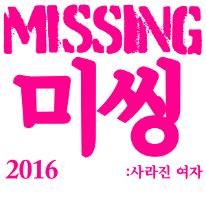
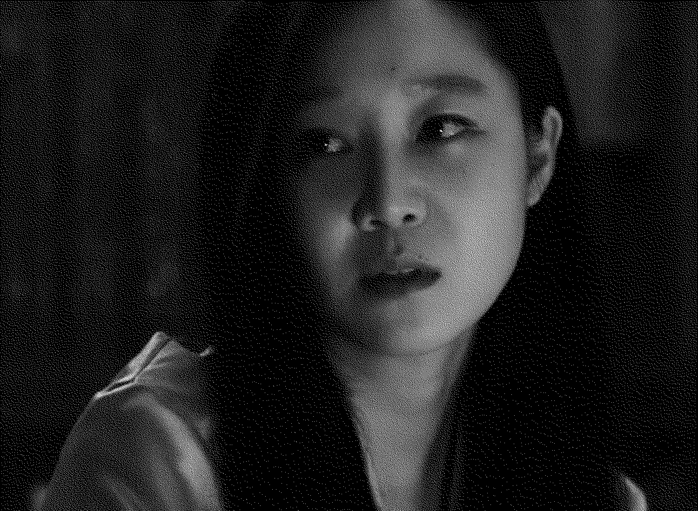
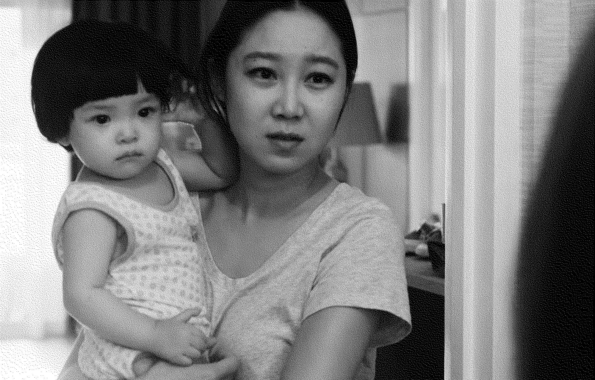
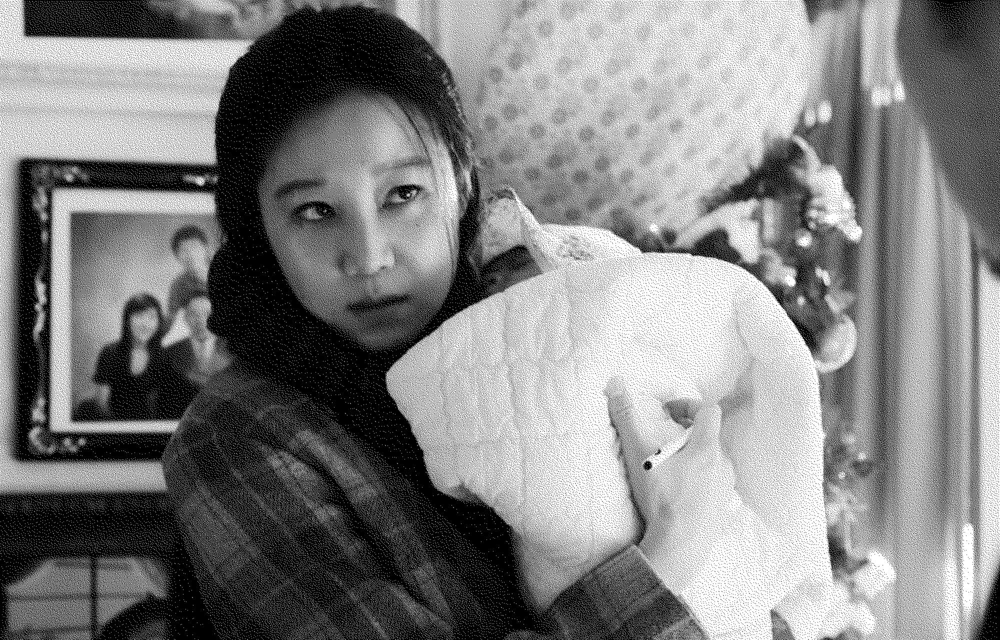
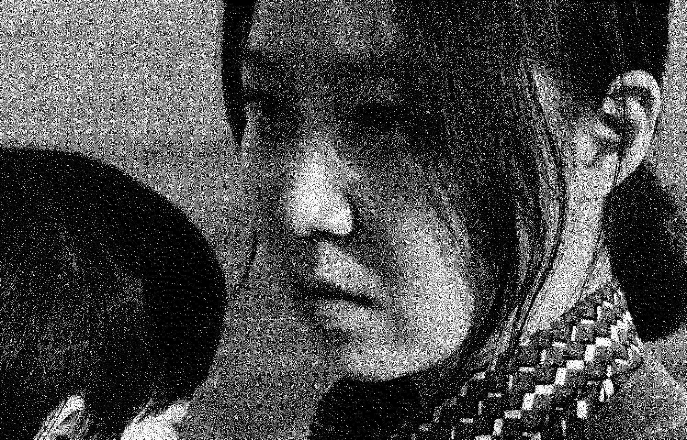

한매
복수자
미씽: 사라진 여자
MISSING
2016년
감독 이언희
미스터리/가족
100분
한매 역
공효진


한매의 첫 번째 대사
어디로 가는지 혼자서 잘만 가네 꿈결 따라서
00:02:11



한매의 마지막 대사
우리 아가, 항상 고운 것만 보고 좋은 것만 듣게 엄마가 지켜 줄게. 세상에서 제일 행복한 아가로 만들어 줄게. 엄마가 그렇게 할 거야. 사랑해, 우리 아가. 我爱你，我的宝贝。
01:30:34